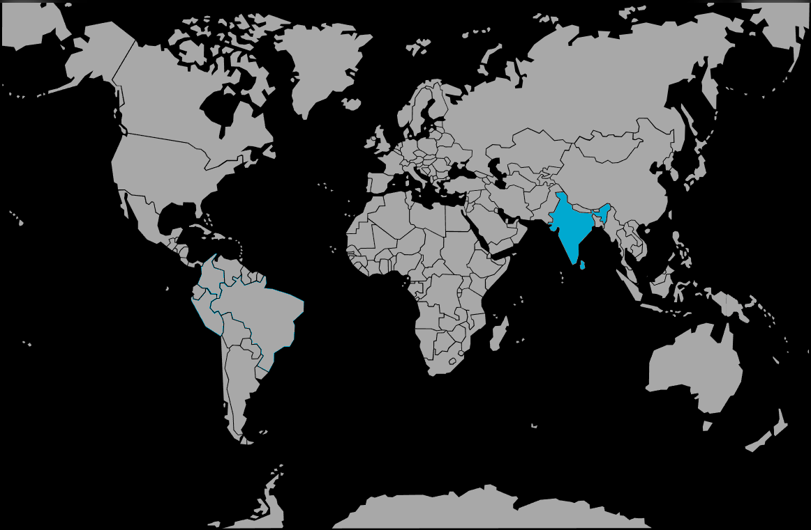

Systématique
- Ordre : Anabantiformes
- Famille : Osphronemidae
- Genre : Pseudosphromenus
- Espèce : Pseudosphromenus cupanus
Pseudosphromenus cupanus, parfois appelé paradis à queue pointue (spiketail paradisefish), est un petit gourami labyrinthidé originaire d’Asie du Sud, apprécié pour son comportement intéressant et sa rusticité.
Il atteint environ 5–6 cm, avec un corps brun à olive, des nageoires ponctuées de motifs sombres et souvent des reflets rouges ou orangés sur la caudale et les nageoires impaires chez le mâle en période de reproduction.
Pseudosphromenus cupanus est généralement calme mais assez discret, occupant surtout la zone médiane et supérieure, et appréciant les aquariums bien structurés avec de nombreux abris.
Il peut être maintenu en couple ou en petit harem (un mâle pour plusieurs femelles) dans un bac communautaire très paisible, ou en spécifique pour observer plus facilement son comportement et la reproduction.
Mode : constructeur de nid de bulles ; le mâle bâtit un nid sous une feuille, une racine, une demi‑noix de coco ou dans un coin calme, puis enserre la femelle qui libère les œufs aussitôt récupérés et placés dans le nid.
Le mâle assure ensuite la garde et la ventilation des œufs jusqu’à l’éclosion et protège les larves jusqu’à la nage libre ; les autres poissons, y compris la femelle, doivent idéalement être retirés pour maximiser le succès de l’élevage.
Dimorphisme sexuel : mâle généralement plus coloré, avec nageoires plus allongées et silhouettes plus élancée ; femelle un peu plus trapue, surtout au niveau de l’abdomen lorsqu’elle est gravide.
Espérance de vie : en moyenne 4 à 6 ans en aquarium, avec une eau stable, bien entretenue et une alimentation variée.
L’espèce fréquente des eaux stagnantes ou à très faible courant : rizières, marécages, fossés, mares et zones calmes de petits cours d’eau, souvent peu profondes, chaudes et riches en végétation.
Répartition
Origine naturelle :
- Principalement sud de l’Inde et Sri Lanka, dans les plaines et zones de faible altitude.
- Présent dans les eaux calmes de rizières, étangs, fossés et marges de rivières lentes, souvent encombrées de végétation et de racines.
Ces milieux sont souvent soumis à des variations saisonnières de niveau d’eau et de température, ce qui explique la bonne tolérance de l’espèce aux conditions changeantes.
Paramètres de maintenance
Température : 24 à 27 °C (tolérance large environ 20–28 °C).
pH : 6,0 à 7,5, eau légèrement acide à neutre, supportant aussi un peu plus alcalin.
GH : environ 5 à 15 °dGH, eau douce à moyennement dure.
Courant : très faible à lent, avec filtration douce, surface partiellement couverte de plantes flottantes pour rassurer les poissons et faciliter la construction des nids.
Volume conseillé : à partir de 60 L pour un couple, davantage pour un harem ou un petit communautaire calme.
Régime alimentaire
Régime : carnivore à tendance insectivore ; se nourrit principalement de petits insectes, larves, micro‑crustacés et zooplancton.
En aquarium, il accepte volontiers proies vivantes et congelées (artémias, daphnies, larves de moustique, microvers) et peut s’habituer aux aliments secs fins, mais une base de nourriture vivante améliore nettement la condition et favorise la reproduction.